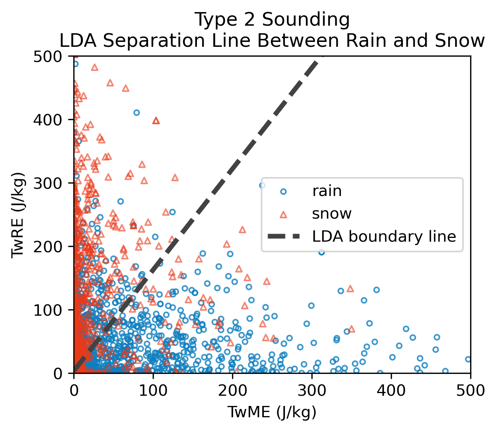
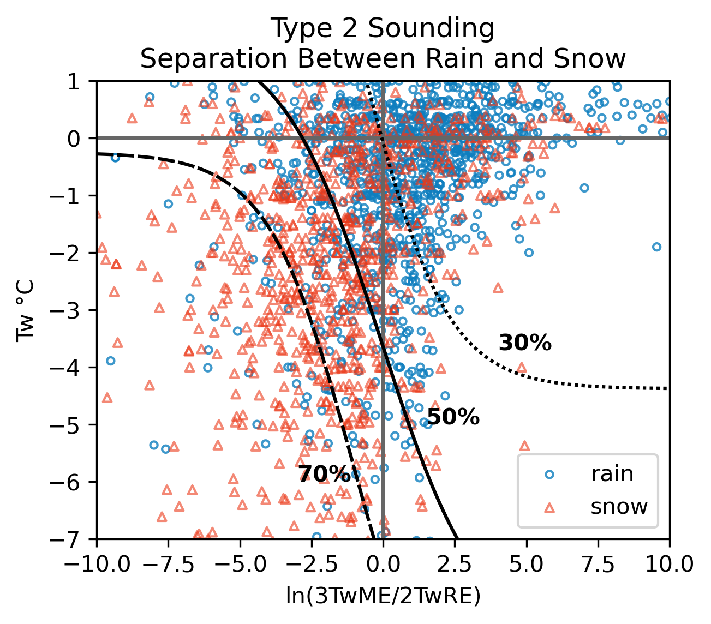
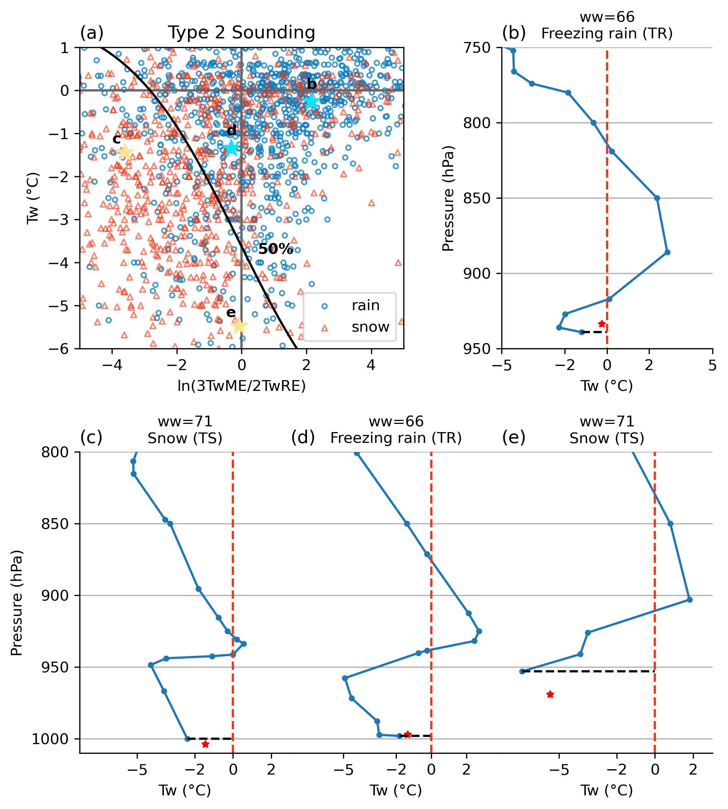

Type 2 Soundings#
Classifying precipitation phase for Type 2 soundings is the main focus of this research. Type 2 soundings feature a melting layer aloft and a refreezing layer below. As shown before, the Probsnow method uses lapse rate to account for atmospheric information, but for this complicated profile with an inversion layer, lapse rate is not sufficient.
There are 2150 soundings in the training and 600 soundings in the evaluation data for Type 2 soundings in our study, far exceeding the sample size in Bourguin (2000) and Birk (2021) (119 and 242, respectively).
For Type 2 soundings, the precipitation phase would depend on the contribution of the melting and refreezing layer, i.e., the ME and RE. Figure 6 shows the TwME and TwRE of rain and snow events in Type 2 soundings. To distinguish between rain and snow events, we initially conducted linear discriminant analysis (LDA) and derived a separation boundary indicated by the black dashed line in Figure 6. However, the linear separation is less convincing due to the concentration of snow events with small TwME and TwRE, as well as the scarcity of data with both large energies.

Figure 6 Rain and snow events in Type 2 soundings. The black dashed line is the boundary line of the linear discriminant analysis indicating the best separation between the two categories.
To address this issue, we leveraged the slope of the LDA separation function (approximately 1.5) to create a new variable - the energy ratio. This ratio, denoted as 3TwME/2TwRE, helps capture the balance between melting and refreezing effects.

Figure 7 Scatter plot of rain (blue circles) and snow (red triangles) events with Type 2 soundings with respect to the log of energy ratio ln(3TwME/2TwRE) and the surface wet-bulb temperature Tw. The fitted lines for the 30%, 50% and 70% snow probability are shown in dotted, solid and dashed lines, respectively.
The examples shown in Figure 8 below emphasize the intricate interplay between melting and refreezing energies, along with surface temperature, in determining precipitation phase for Type 2 soundings.
melting energy far outweigh refreezing energy (large energy ratio) indicates rain (b) and vice ver sa (c).
same energy ratio but precipitation phases differ (d and e) highlights importance of Tw.
same Tw, moderate energy ratio -> rain (d); small energy ratio -> snow (c).

Figure 8 (a) An enlarged version of Figure 7, with the rain/snow examples marked with cyan/yellow stars. (b-e) Example wet-bulb temperature profiles of Type 2 soundings. TR, TS are abbreviations for true rain and true snow. The blue dots in (b-e) are the observations in IGRA soundings, while the red stars indicate the Tw and surface pressure observation from NCEP ADP weather station.
We applied fitting to the snow probability contours utilizing a function in the form of \(S_2=Tw+5.38tanh(c*y+d)+e\) and derived a set of coefficients for different snow probabilities (not shown here, would be available after the paper is published). For future applications, readers can select various thresholds for classifying rain and snow ranging from 30% to 80% in an interval of 10%. We evaluated the performances of adopting thresholds of 50% and 70%, as shown in the table below. When using the 50% threshold, although the POD decreased by 0.28, the FAR significantly reduced by more than 0.5, indicating stricter snow predictions. Similar improvements are observed for the 70% threshold (drier snow).

The significant improvements compared to the Probsnow method show that the atmospheric energy is capable of representing the vertical temperature and moisture profile properly. The better phase classification for Type 2 soundings would contribute significantly to the overall prediction skills.